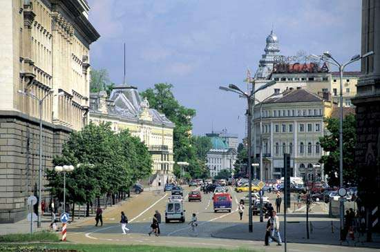

History of Sofia

The Serdi (Sardi), a Thracian tribe, established a settlement in the region in the 8th century BCE.
This community was conquered soon after 29 BCE by the Romans, who named it Serdica (Greek: Sardica).
It flourished during the reign of the emperor Trajan (98–117) and reached its greatest height under the emperor Constantine I the Great;
in 342 or 343 it was the site of an important meeting of Christian bishops, the Council of Sardica.
From the 4th century it was part of the Western Roman Empire, but with the decline of Rome passed to Byzantium;
it was plundered by Attila and the Huns in 441–447.
During the 6th century Byzantine influence increased under the emperor Justinian, and the restored Church of St. Sofia, which later gave the town its name, survives from this period.
In 809 the Bulgarian khan Krum seized the town and incorporated it in the Bulgarian state; it was given the Slav name Sredets (Greek: Triaditsa).
It was under Byzantine rule from 1018 until 1185, when the second Bulgarian Empire was established.
Sofia fell to the Turks in 1382; the Ottoman governor of Rumelia took up residence there, and the town gradually acquired a distinctive Oriental appearance.
It was liberated from Ottoman rule by Russian troops on January 4, 1878, and was designated the Bulgarian capital on April 3, 1879.
After World War II the city was further industrialized. The chief industries are engineering, metallurgy, food processing, and the manufacture of textiles and clothing.
Printing is important; the rubber, footwear, furniture and woodworking, and chemical industries are also well represented.
An agricultural zone characterized by fruit and vegetable growing and by dairy farming surrounds Sofia, and it is connected with neighbouring towns by roads.
Sofia is also the centre of Bulgarian air and rail traffic.
Local transport is served by tramways, trolleybuses, and buses, while several cable lifts ascend the neighbouring Vitosha Mountains.
Among the many educational institutions in Sofia are the Bulgarian Academy of Sciences, the Academy of Agricultural Sciences, and the University of Sofia (1888),
the oldest establishment of higher learning in Bulgaria. The city also contains the Cyril and Methodius National Library,
the Ivan Vazov National Theatre and Opera House, an astronomical observatory, and a number of museums. In addition to the restored St. George, Boyana, and St. Sofia churches,
historical monuments include two mosques, one housing a fine archaeological collection, and the St. Alexander Nevsky Cathedral,
erected to commemorate the gratitude of the Bulgarian people to the Russian liberators of 1878. Pop. (2011) 1,291,591.